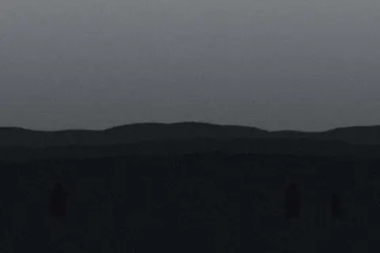
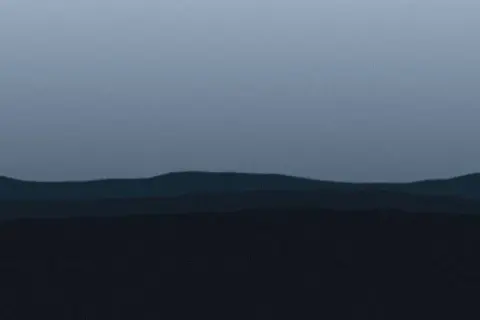
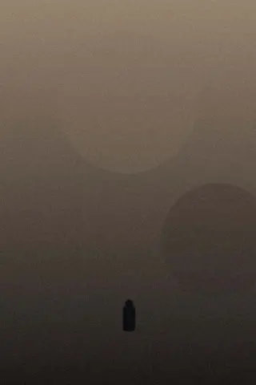
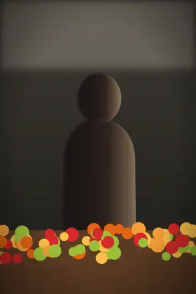
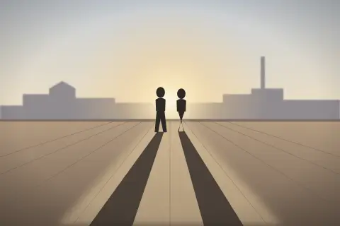
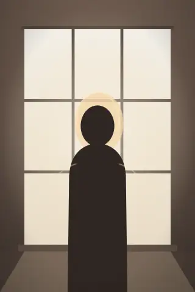
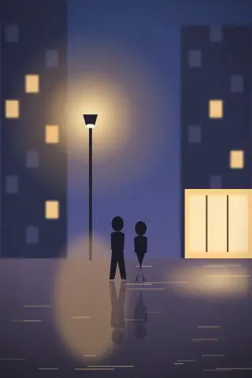

Les 22 photos publiées de Sébastien et de Julien. Choisissez un regard ou une série ; chaque choix a sa propre adresse, à partager.
22 photos · ordre choisi par nous







Les 22 photos sont affichées.
10État · Regard « Julien » : la grille, le titre et les comptes suivent
Les photos de Julien
12 sur 22 · ordre choisi par nous
11État · Deux filtres sans photo commune (adresse partagée)
Atlantique, par Julien
0 photo
Aucune photo de Julien dans la série Atlantique. Ses trois photos sont de Sébastien.
12État · Ordre ouvert (un <details>, sans script)
13État · Allemand : les libellés les plus longs
 Brume sur la LoireSébastien · Anjou · mars 2024
Brume sur la LoireSébastien · Anjou · mars 2024 Dernière heureSébastien · Erg Chebbi · avr. 2023
Dernière heureSébastien · Erg Chebbi · avr. 2023 Le ciel s’est ouvertSébastien · Anjou · oct. 2025
Le ciel s’est ouvertSébastien · Anjou · oct. 2025 Silence blancSébastien · Vercors · févr. 2025
Silence blancSébastien · Vercors · févr. 2025 Sous-boisJulien · Chandelais · juin 2025
Sous-boisJulien · Chandelais · juin 2025 Le lac ne dit rienSébastien · La Réunion · sept. 2024
Le lac ne dit rienSébastien · La Réunion · sept. 2024 Cais do Sodré, marée basseSébastien · Lisbonne · 10 oct. 2026
Cais do Sodré, marée basseSébastien · Lisbonne · 10 oct. 2026 Miradouro, l’heure doréeJulien · Lisbonne · 10 oct. 2026
Miradouro, l’heure doréeJulien · Lisbonne · 10 oct. 2026
 Belém, contre-jourSébastien · Lisbonne · 10 oct. 2026
Belém, contre-jourSébastien · Lisbonne · 10 oct. 2026
 Foz, la barreSébastien · Porto · 11 oct. 2026
Foz, la barreSébastien · Porto · 11 oct. 2026 Alfama, premier tramJulien · Lisbonne · 10 oct. 2026
Alfama, premier tramJulien · Lisbonne · 10 oct. 2026 Linge au balconJulien · Lisbonne · 10 oct. 2026
Linge au balconJulien · Lisbonne · 10 oct. 2026 Inês, rua dos RemédiosJulien · Lisbonne · 10 oct. 2026
Inês, rua dos RemédiosJulien · Lisbonne · 10 oct. 2026 Ribeira, brume du fleuveJulien · Porto · 11 oct. 2026
Ribeira, brume du fleuveJulien · Porto · 11 oct. 2026 Escaliers des GuindaisJulien · Porto · 11 oct. 2026
Escaliers des GuindaisJulien · Porto · 11 oct. 2026